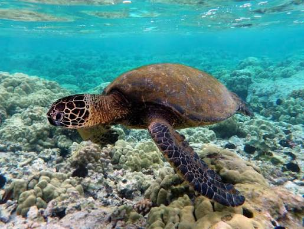

Passe o mouse sobre cada caixa para ver o efeito de :houver.
alguma coisa
Tartaruga marinha (Cheloniidae)
Tartaruga-marinha (Cheloniidae) é a família da ordem das tartarugas que inclui as espécies que habitam mares tropicais e
subtropicais em todo o mundo. O grupo é constituido por seis gêneros e sete espécie, todas elas ameaçadas de extinção.

Legenda: Tartaruga marinha (Cheloniidae)
A sobrevivência das tartatugas-marinhas continuam em risco devido a muitos anos de caça intensa pela sua carapaça, came (utilizada
para sopa) e gordura. Atualmente a caça está controlada, mas estes animais continuam ameaçados pelas redes de pesca que matam cerca
de 40.000 exemplares por ano. Outra das maiores ameaças é o desenvolvimento costeiro nas áreas de nidificação, que impede as
fêmeas de pór os ovos e impossibilita a sua reprodução.
A maioria das espécies são migratórias e vagueiam pelos oceanos, orientando-se com a ajuda do campo magnético terrestre.
Onça-pintada (Panthera onca)
A onça-pintada (Panthera onca) é o maior felino das Americas e o terceiro maior do mundo, atrás apenas do leão e do tigre.
Vive em florestas, pantanais e cerrados, do México até o norte da Argentina.
Legenda: Onça-pintada (Panthera onca)
É um predador de topo de cadeia alimentar: caça desde capivaras e veados até jacarés, usando uma mordida extremamente forte, capaz
de perfurar o crânio de suas presas.
Está classificada como espécie quase ameaçada, principalmente por causa da destruição de seu habitat natural e de conflitos com produtores rurais.
Mico-leão-dourado (Leontopithecus rosalia)
O mico-leão-dourado (Leontopithecus rosalia) é um pequeno primata encontrado apenas na Mata Atlântica do Rio de Janeiro, reconhecido pela pelagem
alaranjada e brilhante que lembra a juba de um leão.
Vive em pequenos grupos familiares e se alimenta principalmente de frutas, insetos e pequenos vertebrados.
Foi um dos primeiros símbolos de conservação da fauna brasileira: chegou a ter menos de 200 indivíduos na natureza na década de 1970, e hoje é considerado
um símbolo de sucesso em programas de reintrodução.